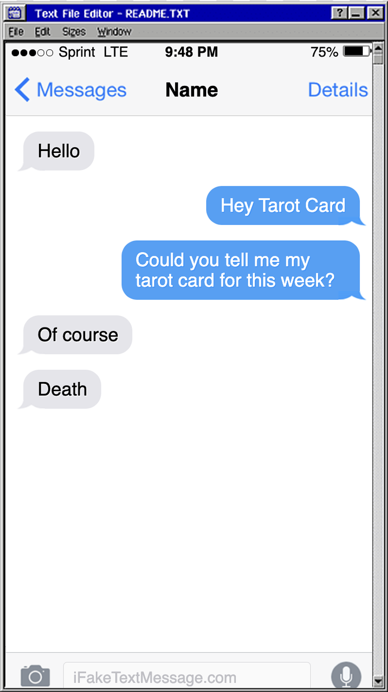
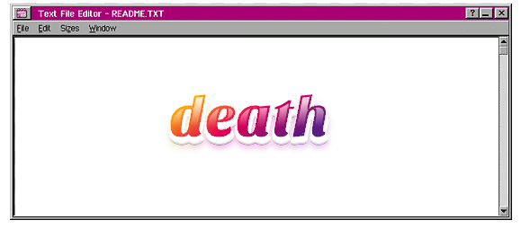
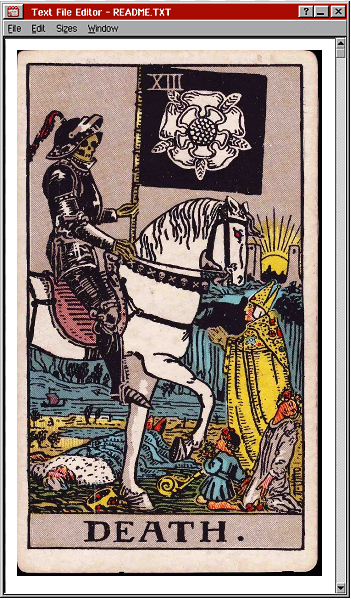

Death, despite it's ominious artwork and name, is not a card that means doom or despair but actually symbolizes the end of a major phase or part of your life. It refers to the closing of one door in order to open another, telling you that something is no longer serving you and it is now time to say goodbye and look forward to new beginnings.
It's very fitting that this card comes at the end of October, right before November begins with winter right around the corner. This card is also very accurate to my life due to my mom having gotten married a week ago today, which I am very happy about but also is a reminder that every beginning also means another thing ending.
any color you like!